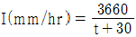
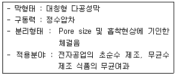
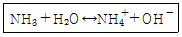
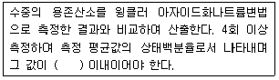
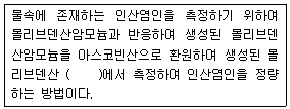
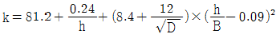
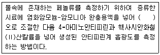
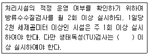
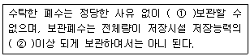

수질환경기사 (2012-03-04 기출문제)
1과목: 수질오염개론
1. 호소의 부영양화에 대한 일반적 영향으로 옳지 않은 것은?
- 영양염류의 공급으로 농산물 수확량이 지속적으로 증가한다.
- 조류나 미생물에 의해 생성된 용해성 유기물질이 불쾌한 맛과 냄새를 유발한다.
- 부영양화 평가모델은 인(P)부하모델인 Vollenweider 모델 등이 대표적이다.
- 심수층의 용존산소량이 감소한다.
(정답률: 81%)

2. 기체의 법칙인 Dalton의 부분압력 법칙에 관한 내용으로 가장 옳은 것은?
- 공기와 같은 혼합기체 속에서 각 성분 기체는 서로 독립적으로 압력을 나타낸다.
- 일정한 온도에서 기체의 부피는 그 압력에 반비례한다.
- 기체가 관련된 화학반응에서는 반응하는 기체와 생성된 기체의 부피 사이에는 부분압력에 따른 정수관계가 성립된다.
- 기체의 확산속도는 기체의 부분압력에 따라 기체 분자량의 제곱근에 반비례한다.
(정답률: 69%)
3. 생물학적 변환(생분해)을 통한 유기물의 환경에서의 거동 또는 처리에 관여하는 일반적인 법칙에 관한 내용으로 옳지 않은 것은?
- 케톤은 알데하이드보다 분해되기 어렵다.
- 다환 방향족 탄화수소의 고리가 3개 이상이면 생분해가 어렵다.
- 포화지방족 화합물은 불포화 지방족 화합물(이중결합)보다 쉽게 분해된다.
- 벤젠고리에 첨가된 염소나 나이트로기의 수가 증가할수록 생분해에 대한 저항이 크고 독성이 강해진다.
(정답률: 75%)
4. 어느 배양기(培養基)의 제한기질농도(S)가 100mg/L, 세포 최대비증식계수(μmax)가 0.35/hr일 때 Monod식에 의한 세포의 비증식계수(μ)는? (단, 제한기질 반포화농도(Ks)는 30mg/L 이다.)
- 0.13/hr
- 0.18/hr
- 0.23/hr
- 0.27/hr
(정답률: 74%)
5. 해수에 관한 다음의 설명 중 옳은 것은?
- 해수의 중요한 화학적 성분 7가지는 Cl-, Na+, Mg++, SO42-, HCO3-, K+, Ca++ 이다.
- 염분은 적도해역에서 낮고 남북 양극 해역에서 높다.
- 해수의 Mg/Ca비는 담수보다 작다.
- 해수의 밀도는 수심이 깊을수록 염농도가 감소함에 따라 작아진다.
(정답률: 72%)
6. 미생물에 의한 영양대사과정 중 에너지 생성반응으로서 기질이 세포에 의해 이용되고, 복잡한 물질에서 간단한 물질로 분해되는 과정(작용)을 무엇이라고 하는가?
- 이화
- 동화
- 동기화
- 환원
(정답률: 83%)
7. KH2PO4로 100mg/L as P 의 500mL 용액을 제조하려면 몇 mg의 KH2PO4가 필요한다? (단, K = 39, P = 31)
- 187.3
- 219.3
- 329.3
- 437.3
(정답률: 67%)
8. 일차반응에서 반응물질 A의 반감기가 5일이라고 한다면 A물질의 90%가 소모되는데 소용되는 시간은?
- 약 14일
- 약 17일
- 약 19일
- 약 22일
(정답률: 72%)
9. 용량이 6000m3인 수조에 200m3/hr의 유량이 유입된다면 수조 내 염소이온 농도가 200mg/L에서 20mg/L 될 때까지의 소요시간(hr)은? (단, 유입수 내 염소이온 농도는 0, 완전혼합형 (희석효과만 고려함))
- 약 34
- 약 48
- 약 57
- 약 69
(정답률: 60%)
10. 아세트산(CH3COOH) 1000mg/L 용액의 pH가 3.0이었다. 이 용액의 해리상수(Ka)는?
- 2 × 10-5
- 3 × 10-5
- 4 × 10-5
- 6 × 10-5
(정답률: 66%)
11. 우리나라 호수들의 형태에 따른 분류와 그 특성을 나타낸 것으로 가장 거리가 먼 것은?
- 하천형 : 긴 체류시간
- 가지형 : 복잡한 연안구조
- 가지형 : 호수내 만의 발달
- 하구형 : 높은 오염부하량
(정답률: 75%)
12. C2H6 15g이 완전 산화하는데 필요한 이론적 산소량은?
- 약 46g
- 약 56g
- 약 66g
- 약 76g
(정답률: 81%)
13. Glucose(C6H12O6) 500mg/L 용액을 호기성 처리시 필요한 이론적인 인(P)량(mg/L)은? (단, BOD5 : N : P = 100 : 5 : 1, K1 = 0.1 day-1, 상용대수기준, 완전분해 기준, BODu = COD)
- 약 3.7
- 약 5.6
- 약 8.5
- 약 12.8
(정답률: 53%)
14. 바다에서 발생되는 적조현상에 관한 설명과 가장 거리가 먼 것은?
- 적조 조류의 독소에 의한 어패류의 피해가 발생한다.
- 해수 중 용존산소의 결핍에 의한 어패류의 피해가 발생한다.
- 갈수기 해수 내 염소량이 높아질 때 발생된다.
- 플랑크톤의 번식에 충분한 광량과 영양염류가 공급될 때 발생된다.
(정답률: 82%)
15. 무기화합물과 유기화합물의 일반적 차이점에 관한 내용으로 옳지 않은 것은?
- 유기화합물들은 대체로 가연성이다.
- 유기화합물들은 대체로 이온반응보다는 분자반응을 하므로 반응속도가 느리다.
- 유기화합물들은 일반적으로 녹는점과 끓는점이 높다.
- 대부분의 유기화합물은 박테리아의 먹이로 될 수 있다.
(정답률: 62%)
16. 콜로이드(Colloid)에 관한 설명으로 옳지 않은 것은?
- 콜로이드를 제거하기 위해서는 콜로이드의 안정성을 증가시켜야 한다.
- 콜로이드 입자들은 대단히 작아서 질량에 비해 표면적이 크다.
- 콜로이드 입자는 모두 전하를 띠고 있다.
- 콜로이드 입자들이 전기장에 놓이면 입자들은 그 전하의 반대쪽 극으로 이동하며 이를 전기영동이라 한다.
(정답률: 63%)
17. CaF2의 용해도적이 3.9×10-11일 때 용액 2000mL에 녹아 있는 CaF2의 양(g)은? (단, CaF2의 분자량은 78)
- 약 0.013
- 약 0.028
- 약 0.033
- 약 0.048
(정답률: 57%)
18. 호소의 성충현상에 관한 설명으로 옳지 않은 것은?
- 수온 약층은 순환층과 정체층의 중간층에 해당되고 변온층이라고도 하며 수온이 수심에 따라 크게 변화된다.
- 호소수의 성충현상은 연직 방향의 밀도차에 의해 층상으로 구분되어지는 것을 말한다.
- 겨울 성층은 표층수의 냉각에 의한 성층이며 역성층이라고도 한다.
- 여름 성층은 뚜렷한 층을 형성하며 연직온도경사와 분자확산에 의한 DO구배가 반대 모양을 나타낸다.
(정답률: 81%)
19. 비점오염원에 대한 설명으로 옳지 않은 것은?
- 넓은 지역에서 면적으로 발생되는 오염부하원이다.
- 오염원을 정확히 파악하기 어려우며, 처리량이 많아 조절하기 어렵다.
- 도시 합류식관 오수의 월류는 비점오염원이다.
- 농경지에서 유출되는 빗물은 SS 및 유해 중금속의 함유도가 높다.
(정답률: 62%)
20. BOD5가 275mg/L 이고, COD가 500mg/L인 경우에 NBDCOD(mg/L)는? (단, 탈산소계수 K1(밑이 10) = 0.15/day)
- 약 114
- 약 127
- 약 141
- 약 166
(정답률: 56%)
2과목: 상하수도계획
21. 관거 직선부에서 하수도 맨홀의 최대 간격 표준은? (단, 600mm 이하의 관 기준)
- 50m
- 75m
- 100m
- 150m
(정답률: 71%)
22. 계획오수량에 관한 내용으로 옳지 않은 것은?
- 지하수량은 1인1일최대오수량의 10~20%로 한다.
- 계획1일평균오수량은 계획1일최대오수량의 70~80%를 표준으로 한다.
- 계획시간최대오수량은 계획1일최대오수량의 1시간당 수량의 1.8~2.3배를 표준으로 한다.
- 합류식에서 우천시 계획오수량은 원칙적으로 계획시간최대오수량의 3배 이상으로 한다.
(정답률: 72%)
23. 오수이송방법 중 압력식(다중압송)에 관한 내용으로 옳지 않은 것은? (단, 자연유하식, 진공식과 비교 기준)
- 지형변화에 대응이 어렵다.
- 지속적인 유지관리가 필요하다.
- 저지대가 많은 경우 시설이 복잡하다.
- 정전 등 비상대책이 필요하다.
(정답률: 61%)
24. 우수 배제 계획시 계획 우수량을 정하기 위하여 고려하여야 하는 사항에 대한 내용으로 옳지 않은 것은?
- 유출계수는 관로 형태에 따른 기초유출계수로부터 총괄 유출계수를 구하는 것을 원칙으로 한다.
- 하수관거의 확률년수는 원칙적으로 10~30년을 원칙으로 한다.
- 유입시간은 최소단위배수구의 지표면 특성을 고려하여 구한다.
- 유하시간은 최상류관거의 끝으로부터 하류관거의 어떤 지점까지의 거리를 계획유량에 대응한 유속으로 나누어 구하는 것을 원칙으로 한다.
(정답률: 56%)
25. 정수시설인 급속여과지의 표준 여과속도는?
- 120~150m/day
- 150~180m/day
- 180~250m/day
- 250~300m/day
(정답률: 72%)
26. 하천수의 취수에 관한 설명으로 옳지 않은 것은?
- 취수보는 안정된 취수와 침사 효과가 큰 것이 특징이다.
- 취수탑(취수지점)은 하천유황이 안정되고 또한 갈수 수위가 2m 이상인 것이 필요하다.
- 취수문은 하천유황의 영향을 직접 받는다.
- 취수관거는 지하에 매설하므로 하상변동이 큰 지점에 적당하다.
(정답률: 61%)
27. 지하수(복류수포함)의 취수 시설 중 집수매거에 관한 설명으로 옳지 않은 것은?
- 복류수의 유황이 좋으면 안정된 취수가 가능하다.
- 하천의 대소에 영향을 받으며 주로 소하천에 이용된다.
- 침투된 물을 취수하므로 토사유입은 거의 없고 대개는 수질이 좋다.
- 하천바닥의 변동이나 강바닥의 저하가 큰 지점은 노출될 우려가 크므로 적당하지 않다.
(정답률: 60%)
28. 도수시설인 접합정에 관한 설명으로 옳지 않은 것은?
- 접합정은 충분한 수밀성과 내구성을 지니며, 용량은 계획도수량의 1.5분 이상으로 한다.
- 유입속도가 큰 경우에는 접합정 내에 월류벽 등을 설치한다.
- 수압이 높은 경우에는 필요에 따라 수압제어용 밸브를 설치한다.
- 유출관의 유출구 중심높이는 저수위에서 관경의 2배 이상 높게 하는 것을 원칙으로 한다.
(정답률: 66%)
29. 하수도계획의 목표연도로 옳은 것은?
- 원칙적으로 10년으로 한다.
- 원칙적으로 15년으로 한다.
- 원칙적으로 20년으로 한다.
- 원칙적으로 25년으로 한다.
(정답률: 77%)
30. 펌프의 수격현상(water hammer)의 방지대책으로 옳지 않은 것은?
- 도출 측 관로에 표준형 조압수조(conventional surege tank)를 설치한다.
- 압력수조(air-chamber)를 설치한다.
- 토출 측 관로에 양방향형 수조(all-way surege tank)를 설치한다.
- 펌프에 플라이 휠(fly-wheel)을 붙인다.
(정답률: 62%)
31. 길이가 100m, 직경이 40cm인 하수관거의 하수유속을 1m/sec로 유지하기 위한 하수관거의 동수경사는? (단, 만관기준, Manning 식의 조도계수 n은 0.012)
- 1.2 × 10-3
- 2.3 × 10-3
- 3.1 × 10-3
- 4.6 × 10-3
(정답률: 51%)
32. 계획취수량을 확보하기 위하여 필요한 저수용량의 결정에 사용하는 계획기준년의 표준으로 가장 적절한 것은?
- 3개년에 제1위 정도의 갈수
- 5개년에 제1위 정도의 갈수
- 7개년에 제1위 정도의 갈수
- 10개년에 제1위 정도의 갈수
(정답률: 75%)
33. 하수관거에 관한 내용으로 옳지 않은 것은?
- 도관은 내산 및 내알칼리성이 뛰어나고 마모에 강하며 이형관을 제조하기 쉽다.
- 폴리에틸렌관은 가볍고 취급이 용이하여 시공성은 좋으나 산, 알칼리에 약한 단점이 있다.
- 덕타일주철관은 내압성 및 내식성이 우수하다.
- 파형강관은 용융아연도금된 강판을 스파이럴형으로 제작한 강관이다.
(정답률: 66%)
34. 원형관수로에 물의 수심이 50%로 흐르고 있다. 경심은? (단, D : 관수로 직경)
- D
- D/2
- D/4
- D/8
(정답률: 78%)
35. 하수재이용수의 제한 조건에 관한 내용으로 옳지 않은 것은?
- 조경용수 : 주거지역 녹지에 대한 관개용수로 공급하는 경우로 식물의 생육에 큰 위해를 주지 않는 수준임
- 공업용수 : 일반적 수질기준 설정 없이 산업체 혹은 세부적인 용도에 따른 수질항목을 지정함
- 하천유지용수 : 기존 유지용수 유량 증대가 주목적이므로 수계의 자정용량을 고려하여 재이용수의 수질을 강화시킬 수 있음
- 지하수충전 : 지하수계의 오염물질 분해 제거율과 축적가능성을 평가하여 영향이 없도록 공급하여야 함
(정답률: 54%)
36. 계획분뇨처리량 기준으로 옳은 것은?
- 1일평균 분뇨발생량을 기준으로 한다.
- 년간 분뇨발생량을 기준으로 한다.
- 계획지역 수거량을 기준으로 한다.
- 지역별 분뇨처리시설 용량을 기준으로 한다.
(정답률: 59%)
37. 오수배제계획시 계획오수량, 오수관거계획에 관하여 고려할 사항으로 옳지 않은 것은?
- 오수관거는 계획1일최대오수량을 기준으로 계획한다.
- 합류식에서 하수의 차집관거는 우천시 계획오수량을 기준으로 계획한다.
- 관거는 원칙적으로 암거로 하며 수밀한 구조로 하여야 한다.
- 오수관거와 우수관거가 교차하여 역사이펀을 피할 수 없는 경우에는 오수관거를 역사이펀으로 하는 것이 바람직하다.
(정답률: 60%)
38. 정수처리시설 중에서, 이상적인 침전지에서의 효율을 검증하고자 한다. 실험결과, 입자의 침전속도가 0.15cm/sec이고 유량이 30000m3/day로 나타났다면 이때 침전효율(제거율)은? (단, 침전지의 유효표면적은 100m2이고 수심은 4m이며 이상적 흐름상태 가정)
- 73.2%
- 63.2%
- 53.2%
- 43.2%
(정답률: 37%)
39. 유역면적이 2km2인 지역에서의 우수 유출량을 산정하기 위하여 합리식을 사용하였다. 다음과 같은 조건일 때 관거 길이 1000m인 하수관의 우수유출량은? (단, 강우강도가

, 유입시간은 6분, 유출계수는 0.7, 관내의 평균유속은 1.5m/sec이다.)- 약 25m3/sec
- 약 30m3/sec
- 약 35m3/sec
- 약 40m3/sec
(정답률: 66%)
40. 하수도시설기준상 축류펌프의 비교회전도(Ns) 범위로 적절한 것은?
- 100~250
- 200~850
- 700~1200
- 1100~2000
(정답률: 65%)
3과목: 수질오염방지기술
41. 포기조내의 혼합액중 부유물농도(MLSS)가 2000g/m3, 반송슬러지의 부유물농도가 9576g/m3이라면 슬러지 반송률은? (단, 유입수내 SS는 고려하지 않음)
- 23.2%
- 26.4%
- 28.6%
- 32.8%
(정답률: 51%)
42. 소화조 슬러지 주입율이 100m3/day이고, 슬러지의 SS 농도가 6.47%, 소화조 부피가 1250m3, SS내 VS 함유율이 85% 일 때 소화조에 주입되는 VS의 용적부하(kg/m3-day)는? (단, 슬러지의 비중은 1.0이다.)
- 1.4kg/m3ㆍday
- 2.4kg/m3ㆍday
- 3.4kg/m3ㆍday
- 4.4kg/m3ㆍday
(정답률: 55%)
43. 침전하는 입자들이 너무 가까이 있어서 입자간의 힘이 이웃입자의 침전을 방해하게 되고 동일한 속도로 침전하며 활성슬렂리공법의 최종침전지 중간 정도의 깊이에서 일어나는 침전형태는?
- 지역침전
- 응집침전
- 독립침전
- 압축침전
(정답률: 59%)
44. 정수처리 시 원수에 질산성 질소가 다량 함유되어 있을 때 처리법과 가장 거리가 먼 것은?
- 이온교환처리
- 응집처리
- 막처리
- 생물처리
(정답률: 50%)
45. 다음에 설명한 분리방법으로 가장 적합한 것은?

- 역삼투
- 한외여과
- 정밀여과
- 투석
(정답률: 55%)
46. A2/0 공법에 대한 설명으로 옳지 않은 것은?
- A2/0 공정은 혐기조-무산소조-호기조-침전조 순으로 구성된다.
- A2/0 공정은 내부재순환이 있다.
- 미생물에 의한 인의 섭취는 주로 혐기조에서 일어난다.
- 무산소조에서는 질산성질소가 질소가스로 전환된다.
(정답률: 61%)
47. 활성슬러지공법으로부터 1일 3000kg(건조고형물기준)이 발생되는 폐슬러지를 호기성으로 소화처리 하고자 할 때 소화조의 용적은? (단, 폐슬러지 농도는 3%, 수온이 20℃, 수리학적 체류시간 23일, 비중은 1.03으로 한다.)
- 약 1515m3
- 약 1725m3
- 약 1945m3
- 약 2233m3
(정답률: 51%)
48. 수량이 30000m3/d, 수심이 3.5m, 하수 체류시간이 2.5시간인 침전지의 수면부하율(또는 표면부하율)은?
- 67.1m3/m2ㆍd
- 54.2m3/m2ㆍd
- 41.5m3/m2ㆍd
- 33.6m3/m2ㆍd
(정답률: 52%)
49. 혐기성 소화조 운전 중 맥주모양의 이상발포가 발생되었을 때의 대책으로 가장 거리가 먼 것은?
- 슬러지의 유입을 줄이고 배출을 일시 중지한다.
- 소화온도를 높인다.
- 조대 교반을 중지한다.
- 스컴을 파쇄ㆍ제거한다.
(정답률: 49%)
50. 바닥면적이 1km2인 호수의 물 깊이는 5m로 측정되었다. 한 달(30일) 사이 호수물의 인 농도가 250μg/L에서 40μg/L로 감소하고 감소한 인은 모두 침강된 것으로 추정될 때 인의 침전율(mg/m2ㆍday)은?
- 26.6
- 35.0
- 48.0
- 52.3
(정답률: 42%)
51. 설계부하가 37.6m3/m2ㆍday 이고, 처리할 폐수 유량 9568m3/day인 경우의 원형 침전조의 직경은?
- 12m
- 14m
- 16m
- 18m
(정답률: 52%)
52. 폐수량 1800m3/일, BOD 250mg/L를 활성슬러지공법으로 처리하여 방류수 수질을 20mg/L 이하로 유지하고자 한다. 포기조 용적 500m3일 때 BOD 용적부하(kg/m3ㆍday)는?
- 0.9
- 1.0
- 1.1
- 1.2
(정답률: 42%)
53. 활성슬러지공법의 하수처리장으로부터 MLSS 2450mg/L, 포기조 용적 2000m3, 포기조 혼합액 1L를 30분간에 걸쳐 침전성을 실험한 결과 225mL의 슬러지 층이 생겼으며, 1차 침전지 유출수의 BOD 150mg/L, 1차 침전지 유출수의 SS 100mg/L, 유량이 8000m3/day일 때 SVI는?
- 83
- 92
- 100
- 118
(정답률: 46%)
54. 염소살균에 관한 설명으로 옳지 않은 것은?
- HOCI의 살균력은 OCI-의 약 80배 정도 강한 것으로 알려져 있다.
- 수중 용존 염소는 페놀과 반응하여 클로로페놀을 형성하여 불쾌한 맛과 냄새를 유발한다.
- pH 9 이상에서는 물에 주입된 염소는 대부분이 HOCI로 존재한다.
- 유리잔류염소는 수중의 암모니아나 유기성 질소 화합물이 존재할 경우 이들과 반응하여 결합잔류 염소를 형성한다.
(정답률: 58%)
55. 회전생물막접촉기(RBC)에 관한 설명으로 가장 거리가 먼 것은?
- RBC로의 유입수는 스크린시설을 거쳐야 하며 내부 재순환으로 적정수질을 유지해야 한다.
- 고정된 메디아로 높은 미생물농도 및 슬러짖일령이 유지된다.
- RBC조의 메디아는 전형적으로 약 40% 정도가 물에 잠긴다.
- RBC시스템은 미생물에 대한 산소공급 소요전력이 활성슬러지 시스템에 비해 적은 편이다.
(정답률: 51%)
56. 폐수로부터 암모니아를 처리하는 방법 중 air stripping이 아래 반응식에 의해 이루어진다. 25℃, pH 10.3일 때 수중 NH3의 분율은? (단, 25℃에서의 평형상수 K = 1.8×10-5이다.)

- 약 78%
- 약 84%
- 약 87%
- 약 92%
(정답률: 25%)
57. 용수 응집시설의 급속 혼합조를 설계하고자 한다. 혼합조의 설계유량은 18480m3/day이며 정방형으로 하고 깊이는 폭의 1.25배로 한다면 교반을 위한 필요 동력은? (단, μ = 0.00131Nㆍs/m2, 속도 구배 = 900 sec-1 체류시간 30초이다.)
- 약 4.3 kW
- 약 5.6 kW
- 약 6.8 kW
- 약 7.3 kW
(정답률: 40%)
58. 폐수량 6000m3/d, 부유 고형물 농도가 150mg/L이다. 공기부상 시험에서 공기와 고형물의 비가 0.⑤mg air/mg-solid일 때 최적의 붓아을 나타낸다. 설계온도 20℃, 이 때의 공기용해도는 18.7mL/L이고, 흡수비(f) = 0.5, 부하율이 0.12m3/m2ㆍmin일 때 반송이 있으며 운전압력이 3.5기압인 부상조 표면적은?
- 26m2
- 49m2
- 57m2
- 95m2
(정답률: 28%)
59. 활성슬러지를 탈수하기 위하여 96.17%(중량비)의 수분을 함유하는 슬러지에 응집제를 가했더니 [상등액：침전슬러지]의 용적비가 2:1이 되었다. 이 때 침전 슬러지의 함수율은? (단, 응집제의 양은 매우 적고, 비중은 1.0으로 가정)
- 86.0%
- 88.5%
- 90.0%
- 92.5%
(정답률: 48%)
60. 응집에 관한 설명으로 옳지 않은 것은?
- 황산알루미늄을 응집제로 사용할 때 수산화물 플록을 만들기 위해서는 황산알루미늄과 반응할 수 있도록 물에 충분한 알칼리도가 있어야 한다.
- 응집제로 황산알루미늄은 대개 철염에 비해 가격이 저렴한 편이다.
- 응집제로 황산알루미늄은 철염보다 넓은 pH 범위에서 적용이 가능하다.
- 응집제로 황산알루미늄을 사용하는 경우, 적당한 pH 범위는 대략 4.5에서 8이다.
(정답률: 46%)
4과목: 수질오염공정시험기준
61. 감응계수를 옳게 나타낸 것은? (단, 검정곡선 작성용 표준용액의 농도 : C, 반응값 : R)
- 감응계수 = R/C
- 감응계수 = C/R
- 감응계수 = R×C
- 감응계수 = C-R
(정답률: 62%)
62. 수은의 측정에 적용 가능한 시험방법과 가장 거리가 먼 것은?
- 냉증기-원자흡수분광광도법
- 양극벗김전압전류법
- 유도결합플라스마-원자발광분광법
- 냉증기-원자형광법
(정답률: 45%)
63. 냄새 측정을 위한 시료의 최대보존기간은?
- 즉시
- 15분
- 2시간
- 6시간
(정답률: 55%)
64. 총 유기탄소 측정시 적용되는 용어 중 비정화성유기탄소에 관한 내용으로 옳은 것은?
- 총 탄소 중 pH 2 이하에서 포기에 의해 정화되지 않는 탄소를 말한다.
- 총 탄소 중 pH 4 이하에서 포기에 의해 정화되지 않는 탄소를 말한다.
- 총 탄소 중 pH 10 이상에서 포기에 의해 정화되지 않는 탄소를 말한다.
- 총 탄소 중 pH 12 이상에서 포기에 의해 정화되지 않는 탄소를 말한다.
(정답률: 41%)
65. 공장폐수나 하수의 관내 유량측정방법 중 공정수(process water)에 적용하지 않는 것은?
- 유량측정용 노즐
- 벤튜리미터
- 오리피스
- 자기식 유량측정기
(정답률: 49%)
66. 기준전극과 비교전극으로 구성된 pH 측정기를 사용하여 수소이온농도를 측정할 때 간섭물질에 관한 내용으로 옳지 않은 것은?
- pH는 온도변화에 따라 영향을 받는다.
- pH 10 이상에서 나트륨 오차 전극을 사용하여 줄일 수 있다.
- 일반적으로 유리전극은 산화 및 환원성 물질, 염도에 의해 간섭을 받는다.
- 기름층이나 작은 입자상이 전극을 피복하여 pH 측정을 방해할 수 있다.
(정답률: 43%)
67. 다음은 용존산소를 전극법으로 측정할 때 정확도에 관한 내용이다. ( )안에 내용으로 옳은 것은?

- 95~1⑤%
- 90~110%
- 80~120%
- 75~125%
(정답률: 36%)
68. 다음은 인산염인(자외선/가시선 분광법-아스코빈산환원법) 측정방법에 관한 내용이다. ( )안에 내용으로 옳은 내용은?

- 적색의 흡광도를 460nm
- 적색의 흡광도를 540nm
- 펑의 흡광도를 660nm
- 청의 흡광도를 880nm
(정답률: 46%)
69. 웨어의 수두가 0.25m, 수로의 폭이 0.8m, 수로의 밑면에서 절단 하부점까지의 높이가 0.7m인 직각3각위어의 유량은? (단, 유량계수

)- 2.6m3/min
- 3.4m3/min
- 4.3m3/min
- 5.2m3/min
(정답률: 33%)
70. 다음은 폐수의 유량 측정법에 있어 1m3/min 이하로 폐수유량이 배출될 경우 용기에 의한 측정 방법에 관한 내용이다. ( )안에 내용으로 옳은 것은?
- 10초 이상
- 20초 이상
- 30초 이상
- 40초 이상
(정답률: 47%)
71. 냄새 역치(TON)을 옳게 나타낸 것은? (단, A : 시료부피(mL), B : 무취 정제수 부피(mL))
- 냄새 역치(TON) = B/(A+B)
- 냄새 역치(TON) = (A+B)/B
- 냄새 역치(TON) = A/(A+B)
- 냄새 역치(TON) = (A+B)/A
(정답률: 46%)
72. 수질오염공정시험기준상 양극벗김전압전류법으로 측정하는 금속은?
- 구리
- 납
- 니켈
- 카드뮴
(정답률: 42%)
73. 다음의 용어의 정의로 옳지 않은 것은?
- 밀폐용기 : 취급 또는 저장하는 동안에 이물질이 들어가거나 또는 내용물이 손실되지 아니하도록 보호하는 용기를 말한다.
- 즉시 : 30초 이내에 표시된 조작을 하는 것을 뜻한다.
- 정밀히 단다 : 규정된 수치의 무게를 0.1mg까지 다는 것을 말한다.
- 냄새가 없다 : 냄새가 없거나 또는 거의 없는 것을 표시하는 것이다.
(정답률: 52%)
74. 석유계총탄화수소(용매추출/기체크로마토그래피)의 적용범위에 관한 내용으로 옳은 것은?
- 지표수, 지하수, 폐수 등에 적용할 수 있으며 정량한계는 0.⑤mg/L이다.
- 지표수, 지하수, 폐수 등에 적용할 수 있으며 정량한계는 0.1mg/L이다.
- 지표수, 지하수, 폐수 등에 적용할 수 있으며 정량한계는 0.2mg/L이다.
- 지표수, 지하수, 폐수 등에 적용할 수 있으며 정량한계는 0.5mg/L이다.
(정답률: 35%)
75. 유기물을 다량 함유하고 있고, 신분해가 어려운 시료에 적용하는 전처리 방법으로 가장 적당한 것은?
- 질산법
- 질산-염산법
- 질산-황산법
- 질산-과염소산법
(정답률: 49%)
76. 다음의 측정항목 중 보존 방법이 다른 것은?
- 잔류염소
- 생물화학적 산소요구량
- 전기전도도
- 부유물질
(정답률: 29%)
77. 다음은 자외선/가시선 분광법에 의한 페놀류 측정에 관한 설명이다. ( )안에 옳은 내용은?

- pH 4
- pH 8.3
- pH 10
- pH 12
(정답률: 50%)
78. 유도결합플라스마 원자발광분광법으로 금속류를 측정할 때 간섭에 관한 내용으로 옳지 않은 것은?
- 물리적 간섭 : 시료 도입부의 분무과정에서 비료의 비중, 점성도, 표면장력의 차이에 의해 발생한다.
- 분광간섭 : 측정원소의 방출선에 대해 플라스마의 기체 성분이나 공존 물질에서 유래하는 분광학적 요인에 의해 원래의 방출선의 세기 변동 및 다른 원자 혹은 이온의 방출선과의 겹침 현상이 발생할 수 있다.
- 화학적 간섭 : 플라스마의 높은 온도로 화학적 간섭이 발생하며 출력이 높은 경우에 현저하다.
- 물리적 간섭 : 시료의 종류에 따라 분무기의 종류를 바꾸거나 시료의 희석, 매질 일치법, 내부표준법, 농축분리법을 사용하여 간섭을 최소화한다.
(정답률: 39%)
79. 정량한계(LOQ)를 옳게 표시한 것은?
- 정량한계 = 3 × 표준편차
- 정량한계 = 3.3 × 표준편차
- 정량한계 = 5 × 표준편차
- 정량한계 = 10 × 표준편차
(정답률: 49%)
80. 시료채취시 유의사항에 관한 내용으로 옳지 않은 것은?
- 채취용기는 시료를 채우기 전에 시료로 3회 이상 세척 후 사용한다.
- 수소이온을 측정하기 위한 시료를 채취할 때에는 운반중 공기와 접촉이 없도록 용기에 가득 채운다.
- 휘발성유기화합물 분석용 시료를 채취할 때에는 뚜겅에 격막이 생성되지 않도록 주의한다.
- 새료채취량은 시험항목 및 시험회수에 따라 차이가 있으나 보통 3~5리터 정도이다.
(정답률: 47%)
5과목: 수질환경관계법규
81. 공공수역의 전국적인 수질 및 수생태계의 실태를 파악하기 위해 환경부장관이 설치, 운영하는 측정망의 종류와 가장 거리가 먼 것은?
- 생물 측정망
- 토질 측정망
- 공공수역 유해물질 측정망
- 비점오염원에서 배출되는 비점오염물질 측정망
(정답률: 32%)
82. 종말처리시설에 유입된 수질오염물질에 오염되지 아니한 물을 섞어 처리한 종말처리시설 운영자에 대한 벌칙 기준은?
- 7년 이하의 징역 또는 5천만원 이하의 벌금
- 5년 이하의 징역 또는 3천만원 이하의 벌금
- 3년 이하의 징역 또는 2천만원 이하의 벌금
- 3년 이하의 징역 또는 1천5백만원 이하의 벌금
(정답률: 23%)
83. 기타 수질오염원을 설치 또는 관리하고자 하는 자는 환경부령이 정하는 바에 의하여 환경부장관에게 신고하여야 하며 신고한 사항을 변경하는 때에도 또한 간다. 이 규정에 의한 변경신고를 하지 아니한 자에 대한 과태료 처분 기준은?
- 100만원 이하의 과태료
- 200만원 이하의 과태료
- 300만원 이하의 과태료
- 500만원 이하의 과태료
(정답률: 28%)
84. 시도지사가 오염총량관리기본계획의 승인을 받으려는 경우, 오염총량관리기본계획안에 첨부하여 환경부장관에게 제출하여야 하는 서류와 가장 거리가 먼 것은?
- 유역환경의 조사, 분석자료
- 지역개발에 따른 오염원 증가 분석자료
- 오염부하량의 저감계획을 수립하는 데에 사용한 자료
- 오염부하량의 산정에 사용한 자료
(정답률: 24%)
85. 초과부과금의 산정기준인 오염물질 1킬로 그램당 부과금액이 가장 낮은 특정유해물질은?
- 6가크롬화합물
- 카드뮴 및 그 화합물
- 납 및 그 화합물
- 트리클로로에틸렌
(정답률: 25%)
86. 수질오염방지시설 중 화학적 처리시설에 속하는 것은?
- 응집시설
- 접촉조
- 폭기시설
- 살균시설
(정답률: 41%)
87. 수질 및 수생태계 환경기준에서 해역의 생활환경 기준으로 옳지 않은 것은? (단, Ⅰ등급 (참돔, 방어 및 미역 등 수산생물의 서식, 양식 및 해수욕에 적합한 수질)기준)(오류 신고가 접수된 문제입니다. 반드시 정답과 해설을 확인하시기 바랍니다.)
- 용존산소량(mg/L) : 7.5 이상
- 용매추출유분(mg/L) : 0.01 이하
- COD(mg/L) : 1 이하
- 총인((mg/L) : 0.⑤ 이하
(정답률: 23%)
88. 다음은 폐수종말처리시설의 유지ㆍ관리기준에 관한 사항이다. ( )안에 옳은 내용은?

- 주 1회
- 월 2회
- 월 1회
- 분기 1회
(정답률: 42%)
89. 폐수처리방법이 생물화학적 처리방법인 경우 가동개시 신고를 한 사업자의 시운전 기간은? (단, 가동개시일 : 11월 10일)
- 가동개시일부터 30일
- 가동개시일부터 50일
- 가동개시일부터 70일
- 가동개시일부터 90일
(정답률: 41%)
90. 낚시제한구역에서의 낚시방법의 제한사항 기준으로 옳은 것은?
- 1개의 낚시대에 4개 이상의 낚시바늘을 떡밥과 뭉쳐서 미끼로 던지는 행위
- 1개의 낚시대에 5개 이상의 낚시바늘을 떡밥과 뭉쳐서 미끼로 던지는 행위
- 1명당 2대 이상의 낚시대를 사용하는 행위
- 1명당 3대 이상의 낚시대를 사용하는 행위
(정답률: 46%)
91. 비점오염저감시설 중 자연형 시설인 인공습지 설치기준으로 옳지 않은 것은?
- 인공습지의 유입구에서 유출구까지의 유로는 최대한 길게 하고 길이 대 폭의 비율은 2:1 이상으로 한다.
- 유입구에서 유출구까지의 경사는 0.5% 이상 1.0% 이하의 범위를 초과하지 아니하도록 한다.
- 습지에서의 침전물로 인하여 토양의 공극이 막히지 아니하는 구조로 설계한다.
- 생물의 서식 공간을 창출하기 위하여 5종부터 7종까지의 다양한 식물을 심어 생물다양성을 증가시킨다.
(정답률: 21%)
92. 사업장의 규모별 구분에 관한 내용으로 옳지 않은 것은?
- 1일 폐수배출량이 800m3인 사업장은 제2종 사업장이다.
- 1일 폐수배출량이 1800m3인 사업장은 제2종 사업장이다.
- 사업장 규모별 구분은 최근 조업한 30일간의 평균배출량을 기준으로 한다.
- 최초 배출시설 설치허가시의 폐수배출량은 사업계획에 따른 예상용수사용량을 기준으로 산정한다.
(정답률: 28%)
93. 수질 및 수생태계 환경기준 중 하천에서의 사람의 건강 보호 기준으로 옳은 것은?
- 6가크롬 : 0.⑤mg/L 이하
- 비소 : 검출되어서는 안 됨(검출한계 0.01)
- 음이온계면활성제 : 0.1mg/L 이하
- 테트라클로로에틸렌 : 0.02mg/L 이하
(정답률: 40%)
94. 다음은 폐수처리업자의 준수사항에 관한 설명이다. ( )안에 내용으로 옳은 것은?

- ① 7일 이상, ② 80%
- ① 7일 이상, ② 90%
- ① 10일 이상, ② 80%
- ① 10일 이상, ② 90%
(정답률: 40%)
95. 환경부장관 또는 시도지사가 측정망을 설치하거나 변경하려는 경우, 측정망설치계획에 포함되어야 하는 사항과 가장 거리가 먼 것은?
- 측정망 운영방법
- 측정자료의 확인방법
- 측정망 배치도
- 측정망 설치시기
(정답률: 31%)
96. 시ㆍ도지사가 오염총량관리기본계획 수립시 포함하여야 하는 사항과 가장 거리가 먼 것은?
- 당해 지역 개발계획의 내용
- 관할 지역의 오염원 현황
- 지방자치단체별ㆍ수계구간별 오염부하량의 할당
- 관할 지역 개발계획으로 인하여 추가로 배출되는 오염 부하량 및 그 저감계획
(정답률: 19%)
97. 기술요원에 대한 교육기관으로 옳은 것은?
- 국립환경인력개발원
- 국립환경과학원
- 한국환경공단
- 환경보전협회
(정답률: 37%)
98. 일일기준초과 배출량 및 일일유량 산정 방법에 관한 내용으로 옳지 않은 것은?
- 배출농도의 단위는 리터당 밀리그램으로 한다.
- 특정수질유해물질의 배출허용기준 초과 일일오염 물질배출량은 소수점 이하 넷째 자리까지 계산한다.
- 일일유량 산정하기 위한 측정유량의 단위는 L/min으로 한다.
- 일일조업시간은 최근 조업한 30일 중 최대 조업시간을 기준으로 분(min)으로 표시한다.
(정답률: 31%)
99. 수질오염경보의 종류가 수질오염감시경보로 관심단계일 때 유역, 지방환경청장의 조치사항과 가장 거리가 먼 것은?
- 지속적 모니터링을 통한 감시 요청
- 원인 조사 및 주변 오염원 단속 강화
- 수면관리자에게 원인 조사 요청
- 관심경보 발령 및 관계 기관 통보
(정답률: 21%)
100. 비점오염저감계획서에 포함될 사항과 가장 거리가 먼 것은?
- 비점오염원 관련 현황
- 비점오염저감시설 유지관리 및 모니터링 방안
- 비점오염원 관리방안
- 비점오염저감시설 설치계획
(정답률: 17%)
영양염류의 공급은 물에서 직접적으로 식물이나 진균 등에게 영양분을 공급하여 생산성을 높이는 역할을 합니다. 그러나 이러한 과정에서 과도한 영양염류의 발생으로 인해 물의 질이 저하되고, 이에 따라 조류나 미생물에 의해 생성된 용해성 유기물질이 불쾌한 맛과 냄새를 유발하며, 심수층의 용존산소량이 감소하는 등의 부작용이 발생할 수 있습니다. 이러한 문제점을 해결하기 위해 부영양화 평가모델이 개발되었으며, 이 중 인(P)부하모델인 Vollenweider 모델 등이 대표적입니다.